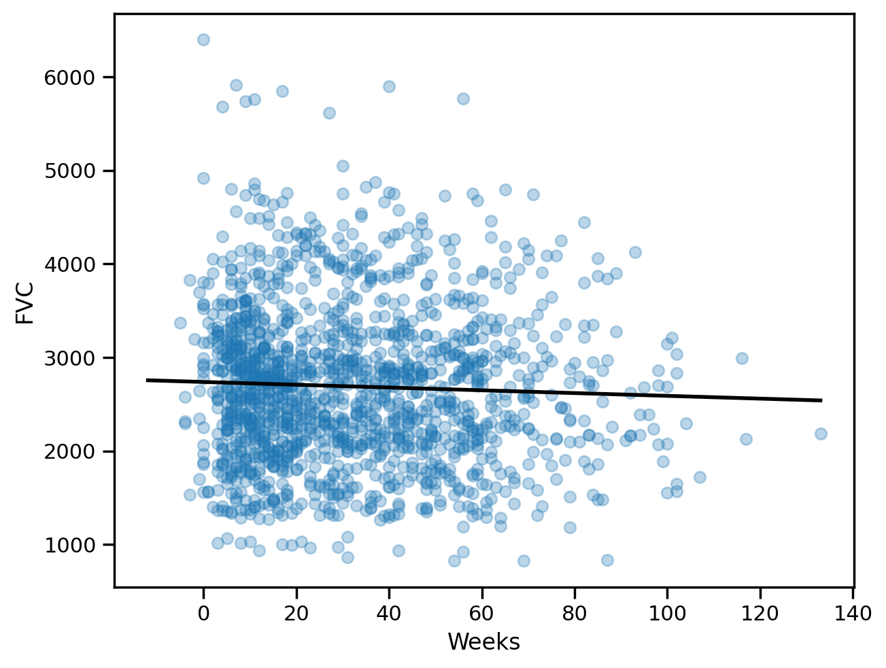
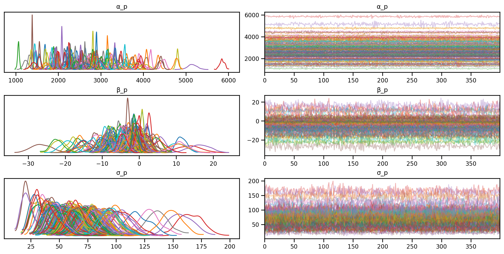

import numpy as np
import matplotlib.pyplot as plt
import pandas as pd
%matplotlib inline
# Retina display
%config InlineBackend.figure_format = 'retina'
from jax import random
import warnings
warnings.filterwarnings('ignore')
plt.rcParams['figure.constrained_layout.use'] = TrueVanilla Linear Regression

import seaborn as sns
sns.set_context("notebook")URL = "https://gist.githubusercontent.com/ucals/" + "2cf9d101992cb1b78c2cdd6e3bac6a4b/raw/"+ "43034c39052dcf97d4b894d2ec1bc3f90f3623d9/"+ "osic_pulmonary_fibrosis.csv"train = pd.read_csv(URL)
train.head()| Patient | Weeks | FVC | Percent | Age | Sex | SmokingStatus | |
|---|---|---|---|---|---|---|---|
| 0 | ID00007637202177411956430 | -4 | 2315 | 58.253649 | 79 | Male | Ex-smoker |
| 1 | ID00007637202177411956430 | 5 | 2214 | 55.712129 | 79 | Male | Ex-smoker |
| 2 | ID00007637202177411956430 | 7 | 2061 | 51.862104 | 79 | Male | Ex-smoker |
| 3 | ID00007637202177411956430 | 9 | 2144 | 53.950679 | 79 | Male | Ex-smoker |
| 4 | ID00007637202177411956430 | 11 | 2069 | 52.063412 | 79 | Male | Ex-smoker |
train.describe()| Weeks | FVC | Percent | Age | |
|---|---|---|---|---|
| count | 1549.000000 | 1549.000000 | 1549.000000 | 1549.000000 |
| mean | 31.861846 | 2690.479019 | 77.672654 | 67.188509 |
| std | 23.247550 | 832.770959 | 19.823261 | 7.057395 |
| min | -5.000000 | 827.000000 | 28.877577 | 49.000000 |
| 25% | 12.000000 | 2109.000000 | 62.832700 | 63.000000 |
| 50% | 28.000000 | 2641.000000 | 75.676937 | 68.000000 |
| 75% | 47.000000 | 3171.000000 | 88.621065 | 72.000000 |
| max | 133.000000 | 6399.000000 | 153.145378 | 88.000000 |
# Number of unique patients
train['Patient'].nunique()176#Number of records per patient
train['Patient'].value_counts().reset_index()['Patient'].value_counts().sort_index().plot(kind='bar')
plt.xlabel("Number of weeks")
plt.ylabel("Number of Patients")Text(0, 0.5, 'Number of Patients')def chart_patient(patient_id, ax):
data = train[train["Patient"] == patient_id]
x = data["Weeks"]
y = data["FVC"]
ax.set_title(patient_id, fontsize=8)
sns.regplot(x=x, y=y, ax=ax, ci=None, line_kws={"color": "black", "lw":2})
f, axes = plt.subplots(1, 3, sharey=True)
chart_patient("ID00007637202177411956430", axes[0])
chart_patient("ID00009637202177434476278", axes[1])
chart_patient("ID00010637202177584971671", axes[2])
f.tight_layout()try:
import numpyro
except ImportError:
%pip install numpyro
import numpyroimport numpyro.distributions as distsample_weeks = train["Weeks"].values
sample_fvc = train["FVC"].values### Linear regression from scikit-learn
from sklearn.linear_model import LinearRegression
lr = LinearRegression()
lr.fit(sample_weeks.reshape(-1, 1), sample_fvc)LinearRegression()In a Jupyter environment, please rerun this cell to show the HTML representation or trust the notebook.
On GitHub, the HTML representation is unable to render, please try loading this page with nbviewer.org.
LinearRegression()
all_weeks = np.arange(-12, 134, 1)# Plot the data and the regression line
plt.scatter(sample_weeks, sample_fvc, alpha=0.3)
plt.plot(all_weeks, lr.predict(all_weeks.reshape(-1, 1)), color="black", lw=2)
plt.xlabel("Weeks")
plt.ylabel("FVC")Text(0, 0.5, 'FVC')
lr.coef_, lr.intercept_(array([-1.48471319]), 2737.784722381955)# Finding the mean absolute error
from sklearn.metrics import mean_absolute_error
maes = {}
maes["LinearRegression"] = mean_absolute_error(sample_fvc, lr.predict(sample_weeks.reshape(-1, 1)))
maes{'LinearRegression': 654.8103093180237}Pooled model
\(\alpha \sim \text{Normal}(0, 500)\)
\(\beta \sim \text{Normal}(0, 500)\)
\(\sigma \sim \text{HalfNormal}(100)\)
for i in range(N_Weeks):
\(FVC_i \sim \text{Normal}(\alpha + \beta \cdot Week_i, \sigma)\)
def pooled_model(sample_weeks, sample_fvc=None):
α = numpyro.sample("α", dist.Normal(0., 500.))
β = numpyro.sample("β", dist.Normal(0., 500.))
σ = numpyro.sample("σ", dist.HalfNormal(50.))
with numpyro.plate("samples", len(sample_weeks)):
fvc = numpyro.sample("fvc", dist.Normal(α + β * sample_weeks, σ), obs=sample_fvc)
return fvcsample_weeks.shape(1549,)# Render the model graph
numpyro.render_model(pooled_model, model_kwargs={"sample_weeks": sample_weeks, "sample_fvc": sample_fvc},
render_distributions=True,
render_params=True,
)from sklearn.preprocessing import LabelEncoder
patient_encoder = LabelEncoder()
train["patient_code"] = patient_encoder.fit_transform(train["Patient"].values)sample_patient_code = train["patient_code"].valuessample_patient_codearray([ 0, 0, 0, ..., 175, 175, 175])from numpyro.infer import MCMC, NUTS, Predictive
nuts_kernel = NUTS(pooled_model)
mcmc = MCMC(nuts_kernel, num_samples=4000, num_warmup=2000)
rng_key = random.PRNGKey(0)WARNING:jax._src.xla_bridge:No GPU/TPU found, falling back to CPU. (Set TF_CPP_MIN_LOG_LEVEL=0 and rerun for more info.)mcmc.run(rng_key, sample_weeks=sample_weeks, sample_fvc=sample_fvc)
posterior_samples = mcmc.get_samples()sample: 100%|██████████| 6000/6000 [00:05<00:00, 1137.39it/s, 7 steps of size 5.24e-01. acc. prob=0.88]import arviz as az
idata = az.from_numpyro(mcmc)
az.plot_trace(idata, compact=True);# Summary statistics
az.summary(idata, round_to=2)Shape validation failed: input_shape: (1, 4000), minimum_shape: (chains=2, draws=4)| mean | sd | hdi_3% | hdi_97% | mcse_mean | mcse_sd | ess_bulk | ess_tail | r_hat | |
|---|---|---|---|---|---|---|---|---|---|
| α | 2724.98 | 33.46 | 2663.52 | 2786.90 | 0.74 | 0.52 | 2052.67 | 1952.52 | NaN |
| β | -1.22 | 0.85 | -2.80 | 0.43 | 0.02 | 0.01 | 1955.95 | 2019.17 | NaN |
| σ | 775.05 | 12.03 | 752.85 | 797.95 | 0.25 | 0.17 | 2411.55 | 2720.36 | NaN |
# Predictive distribution
predictive = Predictive(pooled_model, mcmc.get_samples())predictive<numpyro.infer.util.Predictive at 0x7d2774b0b0a0>predictions = predictive(rng_key, all_weeks, None)pd.DataFrame(predictions["fvc"]).mean().plot()<Axes: >plt.plot(all_weeks, predictions["fvc"].mean(axis=0))
plt.scatter(sample_weeks, sample_fvc, alpha=0.1)<matplotlib.collections.PathCollection at 0x7d2774851d50># Get the mean and standard deviation of the predictions
mu = predictions["fvc"].mean(axis=0)
sigma = predictions["fvc"].std(axis=0)
# Plot the predictions
plt.plot(all_weeks, mu)
plt.fill_between(all_weeks, mu - 1.96*sigma, mu + 1.96*sigma, alpha=0.2)
plt.scatter(sample_weeks, sample_fvc, alpha=0.2)
plt.xlabel("Weeks")
plt.ylabel("FVC")Text(0, 0.5, 'FVC')preds_pooled = predictive(rng_key, sample_weeks, None)['fvc']
predictions_train_pooled = preds_pooled.mean(axis=0)
std_train_pooled = preds_pooled.std(axis=0)### Computing Mean Absolute Error and Coverage at 95% confidence interval
maes["PooledModel"] = mean_absolute_error(sample_fvc, predictions_train_pooled)
maes{'LinearRegression': 654.8103093180237, 'PooledModel': 654.6283571306085}### Computing the coverage at 95% confidence interval
def coverage(y_true, y_pred, sigma):
lower = y_pred - 1.96 * sigma
upper = y_pred + 1.96 * sigma
return np.mean((y_true >= lower) & (y_true <= upper))
coverages = {}
coverages["pooled"] = coverage(sample_fvc, predictions_train_pooled, std_train_pooled).item()
coverages{'pooled': 0.9399612545967102}The above numbers are comparable, which is a good sign. Let’s see if we can do better with a personalised model.
Unpooled Model
\(\sigma \sim \text{HalfNormal}(20)\)
for p in range(N_patients):
\(\alpha_p \sim \text{Normal}(0, 500)\)
\(\beta_p \sim \text{Normal}(0, 500)\)
for PAT in range(N_patients):
for i in range(N_Weeks):\(FVC_i \sim \text{Normal}(\alpha_{p}[PAT] + \beta_{p}[PAT] \cdot Week_i, \sigma)\)
# Unpooled model
def unpool_model(sample_weeks, sample_patient_code, sample_fvc=None):
σ = numpyro.sample("σ", dist.HalfNormal(20.))
with numpyro.plate("patients", sample_patient_code.max() + 1):
α_p = numpyro.sample("α_p", dist.Normal(0, 500.))
β_p = numpyro.sample("β_p", dist.Normal(0, 500.))
with numpyro.plate("samples", len(sample_weeks)):
fvc = numpyro.sample("fvc", numpyro.distributions.Normal(α_p[sample_patient_code] +
β_p[sample_patient_code] * sample_weeks, σ),
obs=sample_fvc)
return fvc# Render the model graph
model_kwargs = {"sample_weeks": sample_weeks,
"sample_patient_code": sample_patient_code,
"sample_fvc": sample_fvc}
numpyro.render_model(unpool_model, model_kwargs=model_kwargs,
render_distributions=True,
render_params=True,
)nuts_kernel_unpooled = NUTS(unpool_model)
mcmc_unpooled = MCMC(nuts_kernel_unpooled, num_samples=200, num_warmup=500)
rng_key = random.PRNGKey(0)model_kwargs{'sample_weeks': array([-4, 5, 7, ..., 31, 43, 59]),
'sample_patient_code': array([ 0, 0, 0, ..., 175, 175, 175]),
'sample_fvc': array([2315, 2214, 2061, ..., 2908, 2975, 2774])}mcmc_unpooled.run(rng_key, **model_kwargs)
posterior_samples = mcmc_unpooled.get_samples()sample: 100%|██████████| 700/700 [00:07<00:00, 90.53it/s, 63 steps of size 9.00e-02. acc. prob=0.91] az.plot_trace(az.from_numpyro(mcmc_unpooled), compact=True);# Predictive distribution for unpooled model
predictive_unpooled = Predictive(unpool_model, mcmc_unpooled.get_samples())# Predictive distribution for unpooled model for all weeks for a given patient
all_weeks = np.arange(-12, 134, 1)
def predict_unpooled(patient_code):
predictions = predictive_unpooled(rng_key, all_weeks, patient_code)
mu = predictions["fvc"].mean(axis=0)
sigma = predictions["fvc"].std(axis=0)
return mu, sigma
# Plot the predictions for a given patient
def plot_patient(patient_code):
mu, sigma = predict_unpooled(patient_code)
plt.plot(all_weeks, mu)
plt.fill_between(all_weeks, mu - 1.96*sigma, mu + 1.96*sigma, alpha=0.6)
id_to_patient = patient_encoder.inverse_transform(patient_code)[0]
patient_weeks = train[train["Patient"] == id_to_patient]["Weeks"]
patient_fvc = train[train["Patient"] == id_to_patient]["FVC"]
plt.scatter(patient_weeks, patient_fvc, alpha=0.5)
plt.xlabel("Weeks")
plt.ylabel("FVC")
plt.title(id_to_patient)plot_pooled = Falsedef plot_total(patient_id = 0, plot_pooled = False):
plot_patient(np.array([patient_id]))
if plot_pooled:
plt.plot(all_weeks, mu, color='g')
plt.fill_between(all_weeks, mu - 1.96*sigma, mu + 1.96*sigma, alpha=0.05, color='g')
plot_total(0, True)plot_total(0, True)plot_total(1, True)plot_total(3)Computing metrics on the training set for unpool_model
predictions_train_unpooled = predictive_unpooled(rng_key,
sample_weeks,
train["patient_code"].values)['fvc']
predictions_train_unpooled.shape(200, 1549)mu_predictions_train_unpooled = predictions_train_unpooled.mean(axis=0)
std_predictions_train_unpooled = predictions_train_unpooled.std(axis=0)
maes["UnpooledModel"] = mean_absolute_error(sample_fvc, mu_predictions_train_unpooled)
maes{'LinearRegression': 654.8103093180237,
'PooledModel': 654.6283571306085,
'UnpooledModel': 98.18583518632232}coverages["unpooled"] = coverage(sample_fvc, mu_predictions_train_unpooled, std_predictions_train_unpooled).item()
coverages{'pooled': 0.9399612545967102, 'unpooled': 0.974822461605072}Exercise: Another variation of unpooled model
# Unpooled model
def unpool_model_var(sample_weeks, sample_patient_code, sample_fvc=None):
with numpyro.plate("patients", sample_patient_code.max() + 1):
α_p = numpyro.sample("α_p", dist.Normal(0, 500.))
β_p = numpyro.sample("β_p", dist.Normal(0, 500.))
σ_p = numpyro.sample("σ_p", dist.HalfNormal(20.))
with numpyro.plate("samples", len(sample_weeks)):
fvc = numpyro.sample("fvc", numpyro.distributions.Normal(α_p[sample_patient_code] +
β_p[sample_patient_code] * sample_weeks,
σ_p[sample_patient_code]),
obs=sample_fvc)
return fvc
# Plot graphical model
numpyro.render_model(unpool_model_var, model_kwargs=model_kwargs,
render_distributions=True,
render_params=True,
)nuts_kernel_unpooled_2 = NUTS(unpool_model_var)
mcmc_unpooled_2 = MCMC(nuts_kernel_unpooled_2, num_samples=400, num_warmup=500)
rng_key = random.PRNGKey(0)
mcmc_unpooled_2.run(rng_key, **model_kwargs)
posterior_samples_2 = mcmc_unpooled_2.get_samples()sample: 100%|██████████| 900/900 [00:08<00:00, 102.48it/s, 63 steps of size 8.17e-02. acc. prob=0.88]az.plot_trace(az.from_numpyro(mcmc_unpooled_2), compact=True);
# Predictive distribution for unpooled model variation 2
predictive_unpooled_2 = Predictive(unpool_model_var, mcmc_unpooled_2.get_samples())predictions_train_unpooled_2 = predictive_unpooled_2(rng_key,
sample_weeks,
train["patient_code"].values)['fvc']
mu_predictions_train_unpooled_2 = predictions_train_unpooled_2.mean(axis=0)
std_predictions_train_unpooled_2 = predictions_train_unpooled_2.std(axis=0)
maes["UnpooledModel2"] = mean_absolute_error(sample_fvc, mu_predictions_train_unpooled_2)
coverages["unpooled2"] = coverage(sample_fvc, mu_predictions_train_unpooled_2, std_predictions_train_unpooled_2).item()
print(maes)
print(coverages){'LinearRegression': 654.8103093180237, 'PooledModel': 654.6283571306085, 'UnpooledModel': 98.18583518632232, 'UnpooledModel2': 81.93005607511398}
{'pooled': 0.9399612545967102, 'unpooled': 0.974822461605072, 'unpooled2': 0.886378288269043}Hierarchical model
\(\sigma \sim \text{HalfNormal}(100)\)
\(\mu_{\alpha} \sim \text{Normal}(0, 500)\)
\(\sigma_{\alpha} \sim \text{HalfNormal}(100)\)
\(\mu_{\beta} \sim \text{Normal}(0, 500)\)
\(\sigma_{\beta} \sim \text{HalfNormal}(100)\)
for p in range(N_patients):
\(\alpha_p \sim \text{Normal}(\mu_{\alpha}, \sigma_{\alpha})\)
\(\beta_p \sim \text{Normal}(\mu_{\beta}, \sigma_{\beta})\)
for i in range(N_Weeks):
\(FVC_i \sim \text{Normal}(\alpha_{p[i]} + \beta_{p[i]} \cdot Week_i, \sigma)\)
### Hierarchical model
def final_model(sample_weeks, sample_patient_code, sample_fvc=None):
μ_α = numpyro.sample("μ_α", dist.Normal(0.0, 500.0))
σ_α = numpyro.sample("σ_α", dist.HalfNormal(100.0))
μ_β = numpyro.sample("μ_β", dist.Normal(0.0, 3.0))
σ_β = numpyro.sample("σ_β", dist.HalfNormal(3.0))
n_patients = len(np.unique(sample_patient_code))
with numpyro.plate("Participants", n_patients):
α = numpyro.sample("α", dist.Normal(μ_α, σ_α))
β = numpyro.sample("β", dist.Normal(μ_β, σ_β))
σ = numpyro.sample("σ", dist.HalfNormal(100.0))
FVC_est = α[sample_patient_code] + β[sample_patient_code] * sample_weeks
with numpyro.plate("data", len(sample_patient_code)):
numpyro.sample("fvc", dist.Normal(FVC_est, σ), obs=sample_fvc)# Render the model graph
numpyro.render_model(final_model, model_kwargs=model_kwargs,
render_distributions=True,
render_params=True,
)nuts_final = NUTS(final_model)
mcmc_final = MCMC(nuts_final, num_samples=4000, num_warmup=2000)
rng_key = random.PRNGKey(0)mcmc_final.run(rng_key, **model_kwargs)sample: 100%|██████████| 6000/6000 [00:50<00:00, 117.83it/s, 63 steps of size 1.04e-02. acc. prob=0.84]predictive_final = Predictive(final_model, mcmc_final.get_samples())az.plot_trace(az.from_numpyro(mcmc_final), compact=True);predictive_hierarchical = Predictive(final_model, mcmc_final.get_samples())predictions_train_hierarchical = predictive_hierarchical(rng_key,
sample_weeks = model_kwargs["sample_weeks"],
sample_patient_code = model_kwargs["sample_patient_code"])['fvc']
mu_predictions_train_h = predictions_train_hierarchical.mean(axis=0)
std_predictions_train_h = predictions_train_hierarchical.std(axis=0)
maes["Hierarchical"] = mean_absolute_error(sample_fvc, mu_predictions_train_h)
coverages["Hierarchical"] = coverage(sample_fvc, mu_predictions_train_h, std_predictions_train_h).item()
print(maes)
print(coverages){'LinearRegression': 654.8103093180237, 'PooledModel': 654.6283571306085, 'UnpooledModel': 98.18583518632232, 'UnpooledModel2': 81.93005607511398, 'Hierarchical': 83.05726212759492}
{'pooled': 0.9399612545967102, 'unpooled': 0.974822461605072, 'unpooled2': 0.886378288269043, 'Hierarchical': 0.9754680395126343}pd.Series(maes)LinearRegression 654.810309
PooledModel 654.628357
UnpooledModel 98.185835
UnpooledModel2 81.930056
Hierarchical 83.057262
dtype: float64# Predict for a given patient
def predict_final(patient_code):
predictions = predictive_final(rng_key, all_weeks, patient_code)
mu = predictions["fvc"].mean(axis=0)
sigma = predictions["fvc"].std(axis=0)
return mu, sigma
# Plot the predictions for a given patient
def plot_patient_final(patient_code):
mu, sigma = predict_final(patient_code)
plt.plot(all_weeks, mu)
plt.fill_between(all_weeks, mu - sigma, mu + sigma, alpha=0.1)
id_to_patient = patient_encoder.inverse_transform([patient_code])[0]
#print(id_to_patient[0], patient_code)
#print(patient_code, id_to_patient)
patient_weeks = train[train["Patient"] == id_to_patient]["Weeks"]
patient_fvc = train[train["Patient"] == id_to_patient]["FVC"]
plt.scatter(patient_weeks, patient_fvc, alpha=0.5)
#plt.scatter(sample_weeks[train["patient_code"] == patient_code.item()], fvc[train["patient_code"] == patient_code.item()], alpha=0.5)
plt.xlabel("Weeks")
plt.ylabel("FVC")
plt.title(patient_encoder.inverse_transform([patient_code])[0])# plot for a given patient
plot_patient_final(np.array([0]))plot_total(0)Questions to ponder
- Incorporating extra information
- How to get
sigmafor sklearn model - How to predict for a new partipant in the hierarchical model
- Assuming they have some observations
- Add the data from this participant at the training time
- “Fine-tune” on this participant data
- Assuming they do not have any observations
- Assuming they have some observations